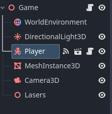
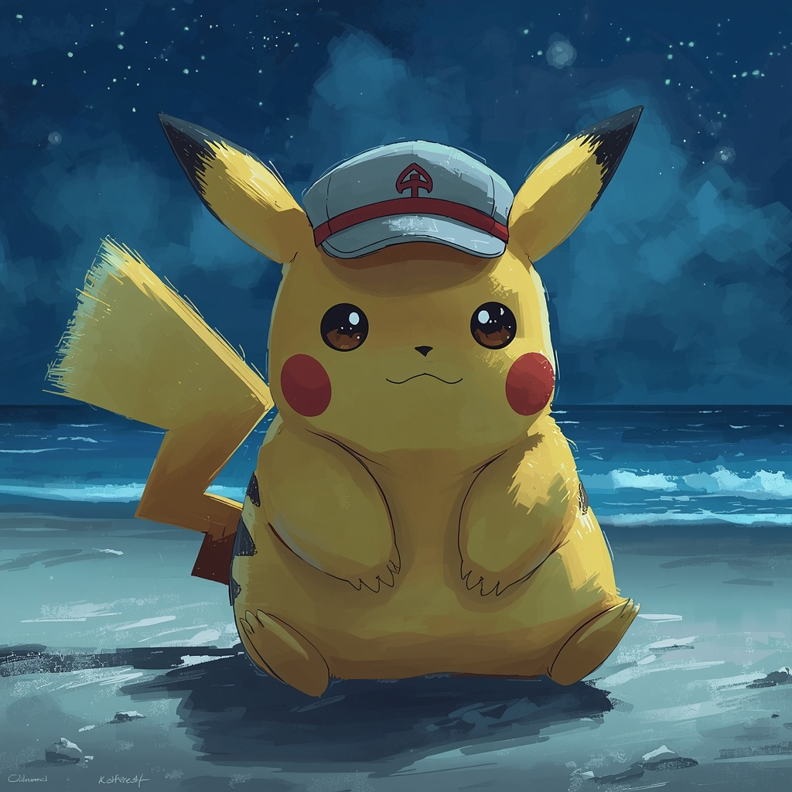

Teknologiforståelse
Raspberry Pi blinkene lys
Resultat av å prøve å lag en type blinkene lys som virker i rekkefølge av grønn(treg), gul(rask) og rød(stopp) ved hjelp av python.
Denne oppgaven hjalp meg skjønne bedre hvordan søke etter informasjon som ikke var rett foran meg, spøring av hjelp på kode jeg ikke kan og hvordan omformere kode jeg ikke har møtt på ofte eller ikke idet hele tatt
Jeg ble stolt over hvordan jeg klarte å omformere kode som var helt ny for meg (med litt hjelp)
Space Shooter
GIF

Dette er resultatet mitt av å prøve å følge et tutorial på å lage et simpelt 3d spill med hjelp av game enginen Godot
Denne oppgaven hjalp med å forstå grunnleggende begreper og kosepter på hvordan simpel 3D game development virker, Hvordan feilsøke hvorfor kode ikke fungerer som forventet, hvordan fikse det, og hvordan bevege seg rundt med et dårlig kamera.
Jeg ble stolt over hvordan jeg klarte oppgaven selv gjennom hvor mange problemer kom gjennom hele tingen med ikke fungerende kode
KI Generering

Dette bildet er resulatatet av å bruke et simpel ki prompt på Leonardo.ai
En av strukturene du kan bruke på generering er:
quality prompts, character identity, face(eyes, face), body(klær, kropp struktur),background(beach/forest/bedroom/sci-fi)
når du skriver det burde du som regel bruke Stikkord(tags) eller korte settninger(tells ikke på ting lignende på gemini eller chatgpt, bare på de som bruker stable diffusion)
Et tips er å bruke weighting (parenteser) for å justere fokus i et prompt. Bruk det kun på de viktigste elementene, ellers kan det skape distortion. Standard fokus er 1.0 (100%), mens f.eks. (masterpiece:1.2) øker til 120%. Hold deg helst mellom 1.1-1.35, og aldri over 1.45. Du kan også redusere fokus med [masterpiece:0.7].